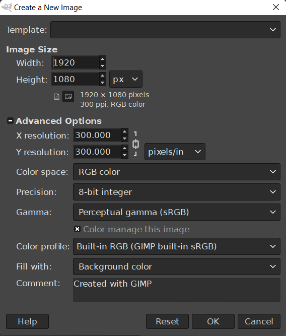
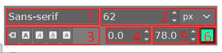
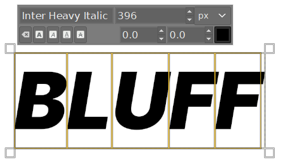
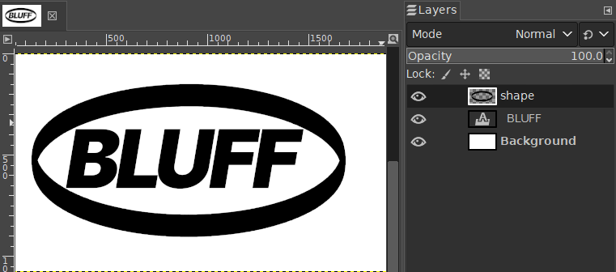
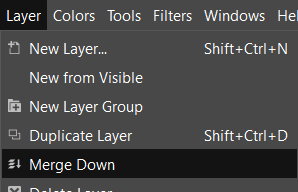
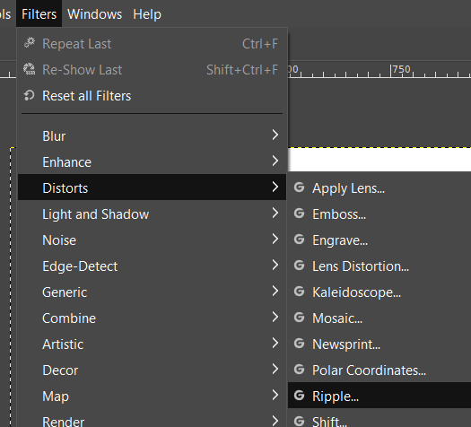
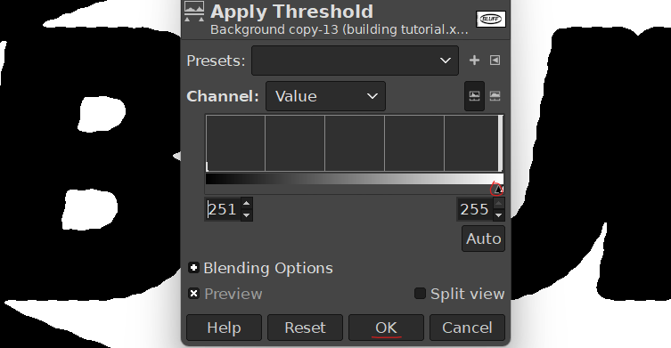
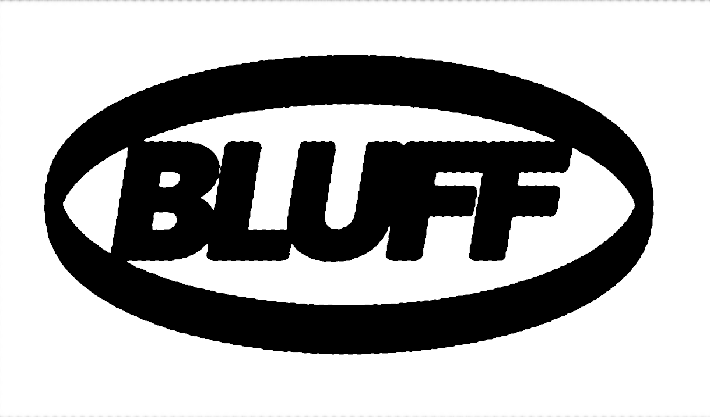
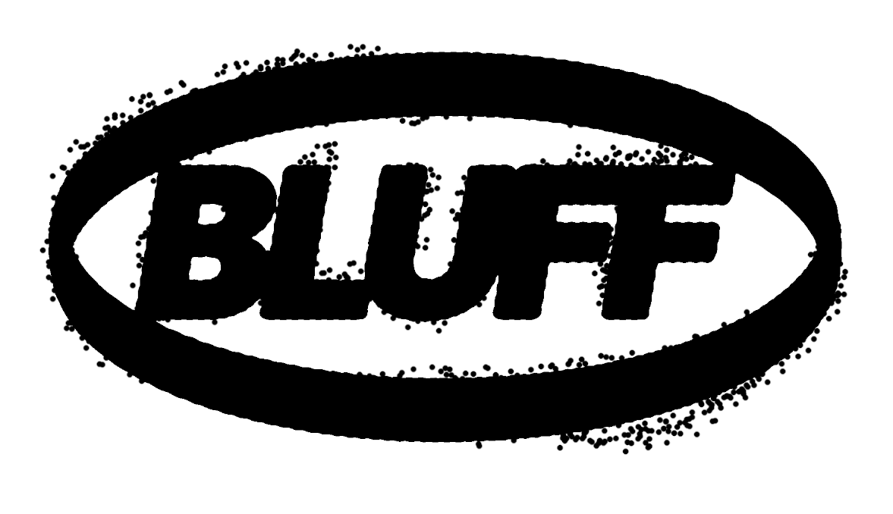

I bet you’ve seen those dirty distressed vintage-looking designs out there. They look cool, right? They do a great deal for parties, techno concerts, sometimes even on clothes. Cool, we’re about to make them. And in the process we’ll learn more stuff.
First off, this tutorial is aimed at GIMP users, and I recommend using GIMP if you want the maximum freedom to experiment visually, and to learn more about how your tool works for you. But these steps are pretty easy so you should be able to reproduce them on any other feature-rich image manipulation program.
If you wish to skip everything else and jump to the most crucial part of the effect, click here
Set up your canvas. That is, your document’s size. Here’s a few “rules” for that:
In my case, I’ll default to 1920x1080 on a white background.

Be aware that in the vanilla version of GIMP, smart layers and multiple selection don’t exist, so we’ll be working with a different, more thorough, but also more informative process.
This technique looks better on bold type. Fat, truly present type. Press T for the text tool and click anywhere. As soon as you type something (in this example, “BLUFF”), the text menu shows up and you’ve created a text layer above your white background.

Select all text with Ctrl+A then change the values. The yellow boxes you see are the individual letter boxes. They provide information on letter spacing.
Make the text big and in black, but let it breathe away from the edges, we’ll be playing with the blur option.
I’ll use Inter Heavy Italic.

Import the other shapes or draw them directly. A square, a circle, or in this case an ellipse. I’ll put it over the text on a different layer, and in close contact with the text’s shape.

Now is the time to copy your layers above the originals by dragging and dropping each one on the duplicate icon at the bottom of the layers tab or selecting each and clicking on the same icon. Or you can press Ctrl+Shift+D. Disable the visibility on the original layers by clicking on the eye icon next to them.
Without distortion, the next touches might make your design look less like a distressed stamp, and more like a blob. That might look good, and we encourage you to try it later. But let’s stick to the original script:
Select your copied text layer, and transform it from text to pixels. This is only necessary to create effects on text, you won’t need to do that to drawn layers. To do this, either click on the top menu Layer > Discard Text Information or right-click on the layer in the layers list view and select Discard Text Information.

This is crucial: the dashed black-yellow lines are your layer’s boundaries. Any effect outside of them will be cropped out. Make the boundary larger by clicking on Layer Boundary Size, either from the top menu Layer or by right clicking through the layers tab. Make the width and height bigger and click on Center next to Offset. Make sure Fill with Transparency is selected in the bottom submenu.
Alternatively, select Layer To Image Size, the option right after Layer Boundary Size. Pay attention to how the dashed line is further from your element now.

Merge your different layers starting from the top one to the bottom one by right-clicking on the layer and selecting Merge Down. This is the only merge option in GIMP. This will allow the distortion to be applied on the whole design at once instead of repeating the process multiple times. You should have your text and shapes in black and background in white all on the same layer.

To access distortion options, select the layer you want to edit and click on Filters > Distorts. In this submenu you can view each distortion effect’s description by hovering over every option and looking at the bottom bar on the screen. I like to use Ripple or Waves. Both create a wavy effect, one creates them in a straight way like rippled paper, the other in a radial fashion, like a rock falling in a pond. I’ll use Ripple, and I’ll reduce the Amplitude and adjust the Period the right amount for my document size, at a 45 degree Angle. Play around with the settings until you achieve something not too distorted but not too clean. Click on OK.

You’ve now got a distorted design. The most important steps in this tutorial are here.
Select the layer we just distorted and click on Filters > Blur > Gaussian Blur. Multiple very interesting blur options are available but here we’ll only focus on this one for the sake of simplicity.

Depending on the size of your image, adjust the blur to your liking, making sure that you see mostly grey between the main black shapes, but not too strong, so you can still see the distortion.
Select the layer, click on Color > Threshold (it’s in the lower part of the Color menu). As you slide the center dot left or right you’ll see the black part cahnge size like a blob. The more you pull to the right, the more black takes over the image. Adjust this slider to a point where the distortion starts to slightly disappear, the letters and the shapes should morph into eachother, but not too smoothly.

As soon as you’re satisfied with the shape of your bleeding stamp design, click OK. You should have something like this, in pure black and white, slightly distressed and morphed:

Try repeating distort-blur-threshold slightly changing the design every time, it’ll produce nice results.
You’ve made it this far, why not a little further? We’ll try to make the design a little more appealing. Grab a few splatter or stipple brushes. If you can’t find any, take the basic round brush, deacrease the size to a small dot, increase the Spacing (in the Tool Options tab) and enable Apply Jitter. Change the Amount slider as much as you wish, by testing first on a new layer you’ll delete later. You’ve got a homegrown stipple brush! Apply it on the edges of the design on a layer above, merge the two layers, blur them a small amount and apply the Threshold filter again(you know how by now.) They should increase the unevenness of your design.

For an even more eroded effect, while doing the previous step, before the blur and threshold part, create a new layer with Transparency, set your Foreground Color to white, make the same brush smaller, the Spacing bigger and the Jitter Amount bigger. Then drag across the screen. You’ll see something like bullet holes. Merge this layer with the one under it and apply the blur and threshold.

With a few more tutorials on Gradient Map, Noise, and Blending Options, you can achieve something like this in a matter of minutes!